Title: Fluctuation relations and the foundations of statistical
thermodynamics: a deterministic approach
Presenter: Debra J. Searles (Bernhardt)
Affiliation: The University of Queensland
Authors: Debra J. Searles (Bernhardt), James C. Reid, Stephen R. Williams, Lamberto Rondoni and Denis J. Evans.
Abstract:
The fluctuation theorem and the work relation are exact nonequilibrium thermodynamic relations developed almost two decades ago. In the intervening time these relations have been applied to prove a number of new theorems including the dissipation theorem, the relaxation theorem, the maximum likelihood estimator and various phase function representations. They can also be applied to provide a proof of Boltzmann's postulate of equal a priori probability and a proof of the relationship between the phase space volume, the physical volume, the energy and the thermodynamic entropy and temperature for the equilibrium microcanonical ensemble. We will discuss these relationships and their application to some model systems.
Title: Topological order in spin systems
Author: Paul Fendley
Affiliation: University of Virginia
Abstract:
Long ago the Ising model was solved by rewriting the spins in terms of
Majorana fermionic variables. More recent studies have shown how the
Ising ordered phase described in terms of the fermions is a simple
example of topological order. I will explain what topological order is,
and explain how this and other topological concepts are quite useful in
studying spin systems. One example I will discuss is the role
parafermionic zero modes play in chiral clock/Potts models. More
generally, I will explain how two-dimensional integrable lattice models
play a major role in understanding two-dimensional quantum models with
topological order.
Title: Integrable dynamics: practical applications and abstract theory
Author: Jarmo Hietarinta
Affiliation: University of Turku
Abstract: Integrable systems were studied already in the late 1800's and their
active development started again after the seminal paper of Zabusky and
Kruskal in 1965. In this paper they demonstrated elastic scattering in
the Korteweg-de Vries equation and coined the term ``soliton''.
Subsequently many interesting mathematical properties of integrable
systems were revealed, along with practical applications. I will present
three different classes of equations and corresponding definitions of
integrability specially suited for them. Finally I will demonstrate that
even though different classes of integrable systems were originally
defined by different criteria, there are in fact various connections
between them.
Title: Quantum integrable systems and curve counting
Author: Andrei Okounkov
Affiliation: Columbia University
Abstract:
Quantum cohomology is a deformation of the classical cohomology algebra of an algebraic variety X that takes into account enumerative geometry of rational curves in X. For many interesting varieties, it can be described in terms of certain quantum integrable systems. For example, Givental and Kim described the quantum cohomology of flag manifolds in terms of Toda lattices. A general vision for a connection between quantum cohomology and quantum integrable systems recently emerged in supersymmetric gauge theories, in particular in the work of Nekrasov and Shatashvili. In this lecture, I will describe an approach to these problems developed in my joint work with Davesh Maulik.
Title: The dynamics of compact bodies in General Relativity: recent progress
and open problems
Author: Todd Oliynyk
Affiliation: Monash University
Title: Spectrum of states in gauge-string duality
Author: Arkady Tseytlin
Affiliation: Imperial College
Title:
Quasi-exact solvable double Morse potential and proton tunnelling in hydrogen-bonded crystals
Author:
Davids Agboola
Affiliation:
The University of Queensland
Abstract:
We present exact solutions to the Schrödinger equation with the double Morse potential, consisting of two back-to-back Morse functions. The resulting differential equation is found to be quasi-exactly solvable and closed form energies and wavefunctions are obtained using the Bethe ansatz method. The results obtained are used as prototype description for the of hydrogen-bonded crystals COOH and KDP as well as their deuteriated cases.
Title:
Integrability as a consequence of Discrete Holomorphicity
Author:
Imam Tashdid ul Alam
Affiliation:
Australian National University
Abstract: In the past few years, discretely holomorphic observables have
been identified in several solvable lattice models at criticality. The
existence of rhombic embeddings of general Baxter lattices allows us to
consider the condition of discrete holomorphicityon these embeddings
onto the complex plane. We show that, by considering the contour sum
around adjacent rhombi, the integrability of the underlying model can be
demonstrated. In particular, both the Yang-Baxter equations and the
inversion relations, the main ingredients of the commuting transfer
matrix method, can be derived from the contour sums.
Title:
Is there a hidden 3-dimensional structure in the 2D Hubbard model?
Author:
Vladimir Bazhanov
Affiliation:
Australian National University
Abstract:
The 1+1-dimensonal Hubbard model in condensed matter physics describe two interacting
XY-chains. The model was solved by Bethe Ansatz a long time ago, but the associated Yang-Baxter structure still remains obscure. In particular, an absence of the "difference property" in the model
might be a manifestation of a hidden 3D structure. In this talk I will review various attempts to connect the Hubbard model with 3D integrable systems.
Title:
Self-avoiding trails with nearest neighbour interactions on the square lattice
Author:
Andrea Bedini
Affiliation:
The University of Melbourne
Abstract:
Self-avoiding walks and self-avoiding trails, two models of a polymer
coil in dilute solution, have been shown to be governed by the same
universality class. On the other hand, self-avoiding walks interacting
via nearest-neighbour contacts (ISAW) and self-avoiding trails
interacting via multiply-visited sites (ISAT) are two models of the
collapse transition of a polymer in dilute solution and, on the square
lattice, it has been established numerically that their collapse
transitions lie in different universality classes. The two models
differ in two substantial ways: in the types of subsets of random walk
configurations utilised (site self-avoidance versus bond self-avoidance)
and in the type of attractive interaction. It is therefore of some
interest to consider self-avoiding trails interacting via nearest
neighbour attraction (INNSAT) in order to ascertain the source for the
difference in the collapse universality class.
Title:
A variational approach for a class of exactly solvable BEC-BCS crossover Hamiltonians
Author:
Andrew Birrell
Affiliation:
The University of Queensland
Abstract:
By combining aspects of both the co-ordinate Bethe ansatz and algebraic Bethe ansatz we determine very general classes of exactly solvable Hamiltonians . This approach does not depend on any prior knowledge of a solution of the Yang-Baxter Equation, nor the conserved operators of the Hamiltonian it generates. By taking a variational form for the Hamiltonian and eigenstates we obtain general exact solvability conditions. The procedure is conducted in the framework of Hamiltonians describing the crossover between the low-temperature phenomena of superconductivity, in the Bardeen-Cooper-Schrieffer (BCS) theory, and Bose-Einstein condensation (BEC).
Title:
On the K-theory classification of topological states of matter
Author:
Peter Bouwknegt
Affiliation:
Australian National University
Abstract:
Topological insulators and superconductors are many-fermion
systems possessing an unusual band structure that leads to a bulk band gap
as well as topologically protected gapless extended surface modes (known as
the `bulk-boundary correspondence').
It was recently realised by Kitaev, that deformation classes of gapped
Hamiltonians are naturally classified by K-theory. This
classification parallels the classification of the 2 complex and 8 real symmetry
classes of Hamiltonians (the `10-fold way') of Altland and Zirnbauer,
and naturally leads to a periodic table of topological insulators.
In this talk I will give a brief overview of these developments. I will also
describe how the bulk-boundary correspondence fits in with the K-theory picture.
Title: Flux-quantization by Bäcklund transformations in a model of
electrodiffusion based on Painlevé II
Author: Tony Bracken
Affiliation: Department of Mathematics, The University of Queensland
Abstract: An established model of steady one-dimensional two-ion electrodiffusion
across a liquid junction involves three coupled first-order nonlinear
ordinary differential equations, and has the second-order Painlevé II
equation at its core. Solutions are grouped by Bäcklund
transformations into infinite sequences, each characterized by
evenly-spaced quantized fluxes of the two ionic species, and hence
evenly-spaced quantization of the electric current-density. For the
sequence generated from a particular exact solution, first constructed
by Planck, this flux quantization is shown to reflect the underlying
quantization of electric charge.
Title:
A Bethe Ansatz Constant term solution to Osculating Lattice Paths
Author:
Richard Brak
Affiliation:
The University of Melbourne
Abstract:
This talk will show how the Bethe Ansatz can be used to solve a set of coupled partial difference equations for osculating lattice paths. Osculating paths are sets of directed square lattice paths that are allowed to share vertices but not edges. The paths occur in the six vertex model and alternating sign matrix enumeration.
Title:
Constrained Separation of Variables in Schroedinger Equations via Incomplete Staeckel Matrices
Author:
Philip Broadbridge
Affiliation:
La Trobe University
Title:
Invariant Classification of Second-Order Conformally-Superintegrable Systems
Author:
Joshua Capel
Affiliation:
University of New South Wales
Title:
Hyperbolic Magnetic Monopoles
Author:
Joseph Chan
Affiliation:
The University of Melbourne
Abstract:
Many Grand Unified Theories (GUTs) require the existence of magnetic monopoles. In Yang-Mills-Higgs gauge field theory, they arise as soliton solutions, tying together topology, algebraic geometry and integrable systems. The euclidean case has been studied extensively but the hyperbolic picture is still incomplete. I will speak about the spectral curve and holomorphic sphere associated to a hyperbolic monopole.
Title: Endless self-avoiding walks
Author: Nathan Clisby
Affiliation: The University of Melbourne
Abstract:
We introduce a self-avoiding walk model for which
end-effects are completely eliminated. We enumerate the number of
these walks on the square and cubic lattices, and use these
enumerations to study the properties of this model in two and three
dimensions. The technique by which end-effects are eliminated may be
generalised to other models of polymers such as interacting
self-avoiding walks.
Title:
Random rectangle-triangle tilings and Painleve VI
Author:
Jan De Gier
Affiliation:
The University of Melbourne
Abstract:
Random rectangle-triangle tilings are non-free fermionic generalisations of rhombus tilings that were discovered in the late nineties. I will discuss three such tilings that are Bethe ansatz solvable. The Bethe integral equations have a non-trivial monodromy related to SL(2,Z) which reduces to a finite cyclic monodromy in special cases. It was recently pointed out that the general case has an interesting connection to Painleve VI.
Title:
Diagrammatic Monte Carlo simulation of the Fermi-Hubbard model
Author:
Youjin Deng
Affiliation:
University of Science and Technology of China
Abstract:
I will discuss the general scheme of the diagrammatic Monte Carlo method for correlated fermion system, and then discuss its application to the Fermi-Hubbard model.
Title:
Unstable Klein-Gordon modes in an accelerating universe
Author:
Kathryn Deutscher
Affiliation:
La Trobe University
Abstract:
Current observations show the universe to be made up predominantly of ``dark energy,'' (energy that has no particle or radiation interpretation). It is known that when unstable modes are quantised, there is no Fock representation and therefore no particle or radiation interpretation. In this sense, these modes might be regarded as dark energy.
We develop a full solution of a scalar quantum field coupled to an accelerating universe. In the case of minimal coupling of massless fields, there exist modes that become unstable at a discrete sequence of times. After canonical quantisation, these unstable modes represent energy eigenstates that can be viewed as neither particle nor oscillatory radiation. We then partition the energy into stable and unstable components. As time increases, modes of increasing wave number cease to be oscillatory and become unstable. The number of unstable modes remains finite, guaranteeing a preferred physical representation for the system.
Title:
Endings and Beginnings: The Story of Non-Intersecting Paths
Author:
Paul Fijn
Affiliation:
The University of Melbourne
Title:
A domain wall theory for the prioritising exclusion process
Author:
Caley Finn
Affiliation:
The University of Melbourne
Abstract:
The prioritising exclusion process is a model for the operation of
hospital queues where customers (patients) are classified as high or
low priority. Upon arrival, customers of both classes join the back of
the queue, but a high priority customer can overtake a low priority
customer immediately ahead of them, so that the order of service
depends on priority class as well as time spent in the queue. The
overtaking is analogous to the particle hopping in the asymmetric
exclusion process (ASEP). However, as customers arrive and are served
the queue grows and shrinks so, unlike the ASEP, the system does not
have a fixed length. We show that this system is well described by a
domain wall theory, and, in fact, this picture is exact for certain
regions of the parameter space.
Title:
Asymptotics of spacing distributions in random matrix theory
Author:
Peter Forrester
Affiliation:
The University of Melbourne
Abstract: It's now over 50 years since Dyson first used Coulomb gas
methods to predict the asymptotics of the spacing distribution in random
matrix ensembles. I'll review some of the subsequent progress.
Title:
Numerical space-times near space-like and null infinity
Author:
Joerg Frauendiener
Affiliation:
University of Otago
Title:
Complete solutions to a class of nonconvex variational/boundary value problems with applications in phase transitions of solids
Author:
David Gao
Affiliation:
University of Ballarat
Title:
Novel Phase Transitions in XY Antiferromagnets on Plane Triangulations
Presenter:
Tim Garoni
Affiliation:
Monash University
Authors:
Tim Garoni, Youjin Deng, Jian-Ping Lv
Abstract:
Using Monte Carlo simulations and finite-size scaling, we investigate the XY antiferromagnet on the triangular, Union Jack and bisected-hexagonal lattices, and in each case find both Ising and Kosterlitz-Thouless transitions. As is well-known, on the triangular lattice, as the temperature decreases the system develops chiral order for temperatures 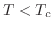, and then quasi-long-range magnetic order on its sublattices when 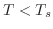, with 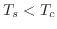. On the Union Jack and bisected-hexagonal lattices, by contrast, we find that as 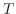 decreases the magnetizations on some of the sublattices become quasi-long-range ordered at a temperature 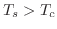, before chiral order develops. In some cases, the sublattice spins then undergo a second transition, of Ising type, separating two quasi-long-range ordered phases. On the Union Jack lattice, the magnetization on the degree-4 sublattice remains disordered until 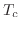 and then undergoes an Ising transition to a quasi-long-range ordered phase.
Title:
Quantum critical matter in one dimension
Author:
Xiwen Guan
Affiliation:
1. Wuhan Institute of Physics and Mathematics; 2. The Australian National University
Abstract:
It has long been appreciated that exactly solved mathematical models
describing the statistical mechanics of interacting particles have played
a key role in the development of formerly unrelated areas of mathematics
and theoretical physics, such as the study of knots, links and braids,
quantum groups, combinatorics, conformal field theory and condensed matter
physics. However, over the past few years striking experimental
achievements in trapping and
cooling atoms in one-dimensional optical waveguides have provided
remarkable realisations of exactly solved models in the lab. More
generally the study of cold atomic matter provides a unique environment to
explore novel quantum many-body effects like quantum liquids, quantum
correlations and quantum criticality. In this talk I will describe some of
these fundamental mathematical models and their relevance to recent and
future experiments on such exotic many-body physics.
Title:
Self-avoiding walks in a rectangle
Author:
Tony Guttmann
Affiliation:
The University of Melbourne
Abstract:
A decade ago the problem was posed of Brownian motion originating at the
centre of a 10 x 1 rectangle, and the problem posed was calculation of
the ratio of probabilities of a Brownian path hitting the short end of
the rectangle before hitting one of the long sides. Surprisingly, for
Brownian motion this probability can be calculated exactly. Here we
consider instead the problem of a self-avoiding walk in the scaling
limit, and pose the same question. Assuming that the scaling limit of
SAW is conformally invariant, we evaluate, asymptotically, the same
ratio of probabilities. For the SAW case we find the probability ratio
is approximately 200 times greater than for Brownian motion.
Title:
Phants and surfaces
Author:
Yi Huang
Affiliation:
The University of Melbourne
Abstract:
One way of studying a Riemann surface is to endow it with its canonical
hyperbolic metric, and then to decompose it into pairs of pants. This
simple idea is the basis for much of Teichmuller space theory, and enables
us to study the moduli space of Riemann surfaces from the hyperbolic
perspective.
A modification on this theme is to introduce cone-point singularities to
our hyperbolic metric. But this quickly runs into trouble as we lose
pants-decomposition when cone-angles become greater than 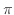. We introduce
the idea of phants as a possible fix for this problem, and hence as a way
to develop and understand the Teichmuller theory of cone-pointed
surfaces.
Title:
On highest weight representations of conformal Galilei algebras
Author:
Phillip Isaac
Affiliation:
The University of Queensland
Abstract:
We discuss highest weight representations of a class of conformal Galilei algebras in one spatial dimension with central extension. This is done by explicitly constructing all singular vectors within the Verma modules and deducing irreducibility of the associated highest weight quotient modules. A resulting classification of infinite dimensional irreducible modules is presented. We deduce a formula for the Kac determinant from our construction, thus proving a conjecture of Dobrev, Doebner and Mrugalla for the case of the Schrodinger algebra.
Title:
A multi-dimensional 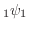 sum and some related topics
Author:
Masahiko Ito
Affiliation:
Tokyo Denki University
Abstract:
Ramanujan's summation is a bilateral extension of the 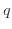-binomial theorem.
We will present several multi-dimensional generalizations of the summation.
In these generalizations, we will mainly explain a multi-dimensional bilateral -series
extended from Evans's Dixon-Anderson integral, which is a multi-dimensional integral evaluation
fundamental to the theory of the Selberg integral.
The evaluation of the -series is shown by a difference equation and a certain asymptotic behavior.
This work was done jointly with P. J. Forrester.
Title:
Algebraic structures from group character rings - an integrable model perspective
Presenter:
Peter Jarvis
Affiliation:
University of Tasmania
Authors:
Bertfried Fauser (RHUL), Peter Jarvis, and Ronald C King (Southampton U)
Abstract:
We study algebraic structures in the character rings of matrix groups, from
a diagrammatic perspective. The primary object is the Hopf algebra of
characters of the finite dimensional polynomial representations of the
general linear group, realised as the ring of symmetric functions on
variables
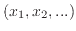. Isomorphic as spaces are the character rings of
the classical orthogonal and symplectic subgroups of the general linear
group. We generalise these to study the the formal character rings
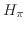
of certain algebraic subgroups of the general linear group, comprised of
matrix transformations leaving invariant a fixed tensor of Young symmetry
type . We present explicit constructions of these subgroup characters,
and identify structural elements and verify the axioms to establish that
each ring is a ribbon Hopf algebra. The corresponding operators
associated with knot projections are illustrated.
Title:
Perimeter polynomials and scaling analysis for percolation problems
Author:
Iwan Jensen
Affiliation:
The University of Melbourne
Title:
Quasi-Classical Expansion of the Star-Triangle Relation
Author:
Andrew Kels
Affiliation:
Australian National University
Abstract:
The master solution of the star triangle relation introduced by Bazhanov and Sergeev, describes an exactly solvable lattice model of statistical mechanics with continuous spins and positive Boltzmann weights. Many different limits of this model can be taken which result in new integrable models. I will describe these limits and give two explicit examples. I will also show how the low temperature (quasi-classical) limit of these models are connected to the discrete integrable equations of Adler, Bobenko and Suris.
Title:
Superintegrability in a non-conformally-flat space
Author:
Jonathan Kress
Affiliation:
University of New South Wales
Abstract:
Until recently all known examples of superintegrable Hamiltonians were systems on constant curvature spaces, or by Staeckel transform, on conformally-flat spaces. Methods developed to investigate the superintegrability of the Tremblay-Turbiner-Winternitz system can be extended to a non-conformally-flat superintegrable system in 4 dimensions possessing irreducible higher rank Killing tensors. These Killing tensors give rise to higher order symmetries of a conformally covariant Laplacian that is not simply the usual one with a 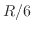 but also includes a term constructed from the conformal curvature. Some recent results involving these systems will be discussed.
Title:
Anti-de Sitter Supersymmetry and Hyperkaehler Geometry
Author:
Sergei Kuzenko
Affiliation:
The University of Western Australia
Title:
Boundary conditions of discretely holomorphic observables and integrable loop models
Author:
Alexander Lee
Affiliation:
The University of Melbourne
Abstract:
In two-dimensional lattice models, there exist certain observables that are discretely holomorphic in the sense that they satisfy a discrete analogue of the Cauchy-Riemann equations. Recent work by Cardy, Ikhlef and others has shown a surprising connection between discrete holomorphicity and integrability. In this talk I will be describing this connection in models where there is a boundary. By requiring that the observable satisfy certain boundary conditions, we are able to obtain new integrable boundary weights for several loop models.
Title:
Generalised Hurwitz numbers and topological recursion
Author:
Oliver Leigh
Affiliation:
The University of Melbourne
Abstract:
Hurwitz numbers count branched covers of the Riemann sphere with fixed genus and prescribed branching data. In the simplest case, there are known connections to the geometry of moduli spaces and the representation theory of the symmetric group. More recently, they have been linked to the topological recursion introduced by Eynard and Orantin. In this talk, we define generalised Hurwitz numbers and discuss how they relate to geometry, and topological recursion.
Title:
Internal Time and Quantum Action Principle in Relativistic Quantum Mechanics
Author:
Inna Lukyanenko
Affiliation:
The University of Queensland
Abstract:
In my talk I will discuss a new form of one-particle relativistic
quantum mechanics with a proper probabilistic interpretation, proposed
by A. Lukyanenko and N. Gorobey (Saint Petersburg State Polytechnical
University). The problem of probabilistic interpretation of the
ordinary one-particle relativistic quantum mechanics comes from the
hyperbolic structure of the Klein-Gordon equation, which does not
conserve positive definite properties. It has been solved by secondary
quantization of the theory (quantum field theory), but it is not the
only possible solution. We propose a modification of the original
theory in which the internal time of a particle is introduced. For this
purpose we consider a quantum analogue of the classical action
principle, where the role of a quantum action is played by the phase
function of a solution of the Schrödinger equation. The internal
time is determined by the condition of stationarity of the quantum
action. Then, the stationary solution becomes a density of probability,
in which time, equally to spatial coordinates, is a stochastic
parameter. The correspondence of the new theory with non-relativistic
quantum mechanics will be discussed.
Title:
Elliptic parametrization of the Zamolodchikov model
Author:
Vladimir Mangazeev
Affiliation:
Australian National University
Abstract:
We study the vertex form of the Zamolodchikov's solution of
the tetrahedron equation in a special limit when one vertex
of the tetrahedron goes to infinity. In this limit the weights can be
parametrized by elliptic functions. A special projection of the
tetrahedron equation produces the tetrahedral Zamolodchikov's algebra
studied by Korepanov, Wadati and Shiroishi, and other authors.
Title:
Generalised Heine-Stieltjes and Van Vleck polynomials associated with integrable BCS models
Author:
Ian Marquette
Affiliation:
The University of Queensland
Abstract:
We will present new results concerning numerical methods to study integrable
systems based on the Bethe Ansatz/Ordinary Differential Equation
(BA/ODE) correspondence. We will discuss how this approach can be applied
to four cases of exactly solvable Bardeen-Cooper-Schrieffer (BCS) pairing
models in their degenerate two-level limit. These are the s-wave pairing
model, the p+ip-wave pairing model, the p+ip pairing model coupled to a
bosonic molecular pair degree of freedom, and a d + id-wave pairing model
with additional interactions. The zeros of the generalised Heine-Stieltjes
polynomials provide solutions of the corresponding Bethe ansatz equations.
We compare the roots of the ground states with curves obtained in the continuum
limit.
Title:
Some field-theoretic ideas out of contact geometry and elementary topology
Author:
Daniel Mathews
Affiliation:
Contextual Systems
Abstract:
Sutured Floer homology and contact homology are invariants of 3-manifolds developed through the ideas of holomorphic curves, symplectic geometry and contact geometry. They satisfy some of the properties of a topological quantum field theory. In various simple cases, these field-theoretic properties can be seen in terms of the elementary topology of curves on surfaces, and algebraic objects associated to them.
Title:
A Non-Hermitian BCS Hamiltonian and Generalised Exclusion Statistics
Author:
Amir Moghaddam
Affiliation:
The University of Queensland
Abstract:
The Bethe ansatz is a key tool in the area of quantum integrable and
exactly solvable models. For each such model, understanding the nature
of the roots of the Bethe ansatz equations is central to understanding
the mathematical physics underpinning the model's behaviour. Here we
analyse an exactly solvable, non-hermitian BCS pairing Hamiltonian
dependent on a real-valued coupling parameter. The Hamiltonian displays
a real spectrum for all values of this coupling parameter. The roots of
the Bethe ansatz equations can be categorized into two classes, those
which are dependent on the coupling parameter and those which are not.
We will discuss how those roots which are independent of the coupling
parameter can be associated to exotic quasi-particles obeying
generalised exclusion statistics, in the sense proposed by Haldane in
1991.
Title:
Feigin-Frenkel center and Yangian characters
Author:
Alexander Molev
Affiliation:
The University of Sydney
Abstract:
For each simple Lie algebra g consider the vacuum module V(g)
at the critical level over the corresponding affine Kac-Moody algebra.
The vacuum module has a vertex algebra structure.
We construct explicit generators of the center of this vertex algebra
for all Lie algebras g of classical types. This gives a new proof of
the Feigin-Frenkel theorem (1992) and leads to explicit constructions
of commutative subalgebras of the universal enveloping
algebras U(g[t]) and U(g), and to higher order Hamiltonians
in the Gaudin model associated with g. Moreover, we use Yangian characters
(or q-characters) to calculate the images of the central elements under
an affine version of the Harish-Chandra isomorphism.
Title:
The Jordan structure of periodic loop models
Author:
Alexi Morin-Duchesne
Affiliation:
The University of Queensland
Abstract:
Non hermitian Hamiltonians play an essential role in the description of two dimensional statistical models such as the Fortuin-Kasteleyn model and the Q-state Potts model. The loop Hamiltonians, as elements of the periodic Temperley-Lieb algebra
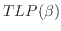, are examples of such Hamiltonians: they have real eigenvalues and exhibit non-trivial Jordan structures for specific values of the parameter 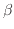.
Loop Hamiltonians and XXZ Hamiltonians are known to be related. In this
talk, the ``twist'' representations of the periodic Temperley-Lieb algebra will be introduced and it will be shown how one can study the non-diagonalizability of the loop Hamiltonian by using tools from an extended family of XXZ models.
Title:
Eynard-Orantin invariants and Frobenius manifolds
Author:
Paul Norbury
Affiliation:
The University of Melbourne
Abstract:
Many problems in enumerative geometry have been brought together using methods from complex analysis developed by Eynard and Orantin. These include intersection theory and Weil-Petersson volumes on the moduli space of curves, various Hurwitz number problems and relative Gromov-Witten invariants of the two-sphere, each arising as the Eynard-Orantin invariants of a Riemann surface equipped with some extra structure. Another common context for these problems is Frobenius manifolds which can be used to give a rigorous notion of mirror symmetry in each case. I will describe a relation between Eynard-Orantin invariants and Frobenius manifolds.
Title:
Lax representations of reductions of non-autonomous lattice equations
Author:
Chris Ormerod
Affiliation:
La Trobe University
Title:
Exact solution of two friendly walks above a sticky wall with
single and double interactions
Author:
Aleks Owczarek
Affiliation:
The University of Melbourne
Abstract:
We find, and analyse, the exact solution of two friendly directed walks,
modelling polymers, which interact with a wall via contact interactions.
We specifically consider two walks that begin and end together so as to
imitate a polygon. We examine a general model in which a separate
interaction parameter is assigned to configurations where both polymers
touch the wall simultaneously, and investigate the effect this parameter
has on the integrability of the problem. We find an exact solution of
the generating function of the model, and provide a full analysis of the
phase diagram that admits three phases with one first-order and two
second-order transition lines between these phases.
Title:
Boundary Conditions for Infinitely Extended Kac Table of Critical Dense Polymers
Author:
Paul Pearce
Affiliation:
The University of Melbourne
Abstract:
Solvable critical dense polymers is a Yang-Baxter integrable model of polymers on the square lattice.
It is the first member
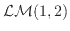 of the family of logarithmic minimal models
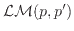.
The associated logarithmic conformal field theory admits an infinite family of
Kac representations labelled by the Kac labels
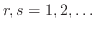.
Here we explicitly construct the conjugate boundary conditions on the strip and solve exactly for
the transfer matrix eigenvalues on arbitrary finite-width strips to obtain the conformal spectra
using the Euler-Maclaurin formula.
The key to the solution is an inversion identity satisfied by the commuting double-row transfer matrices.
The analysis of physical combinatorics involves generalized -Catalan polynomials.
In the scaling limit, the central charge 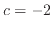 and the Kac formula
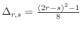
with
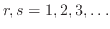 for the conformal weights in the infinitely extended Kac table is confirmed.
Title:
Is Kahan's `unconventional' method conventional?
Author:
Reinout Quispel
Affiliation:
La Trobe University
Abstract:
We show that Kahan's discretization of quadratic vector fields is
equivalent to a Runge-Kutta method. When the vector field is
Hamiltonian, with constant Poisson structure, the map determined by this
discretization has a conserved modified Hamiltonian and an invariant
measure. This produces large classes of integrable rational mappings,
explaining some of the integrable cases that were previously known, as
well as yielding many new ones.
Title:
How to arrange dominoes using quantum numbers
Author:
Jorgen Rasmussen
Affiliation:
The University of Queensland
Abstract:
We consider domino tilings of square lattices on rectangles, cylinders and tori. Working with Lieb's transfer matrix, we point out that the full set of domino configurations may be partitioned into disjoint subsets (sectors) closed under the action of the transfer matrix. These sectors are labelled by an integer or half-integer quantum number we call the variation index. In the continuum scaling limit, each sector gives rise to a representation of the Virasoro algebra. We discuss the corresponding partition functions and how similarities with the critical dense polymer model yield natural finitizations by means of physical combinatorics.
Title:
Modular Properties of Fractional Level WZW Models
Author:
David Ridout
Affiliation:
Australian National University
Abstract:
The modular properties of fractional level WZW models and, in
particular, the application of the Verlinde formula, have a long and
checkered history in conformal field theory. Such theories were
postulated in the late eighties as a means of generalising the
GKO-coset construction of the unitary minimal models to their
non-unitary cousins. Unfortunately, while their modular properties
appeared satisfactory, the Verlinde formula (which is supposed to give
the dimensions of certain vector spaces) always gave a few negative
integers in addition to the expected non-negative ones. This
notorious problem is referred to in textbooks as suggesting that
fractional level theories are ``intrinsically sick''.
Luckily, the formalism of logarithmic conformal field theory has led to a radically new approach to this issue. We will survey the shift in paradigm that has recently been shown to cure the fractional level theories based on affine sl(2) of all sickness. If time permits, we will then discuss (with examples) a selection of the beautiful mathematics that has been used to finally resolve this long-standing problem.
Title:
From conformal invariance to quasistationary states
Author:
Vladimir Rittenberg
Affiliation:
Bonn University
Abstract:
In a conformal invariant one-dimensional stochastic model, a certain
non-local perturbation takes the system to a new massless phase of a
special kind. The ground-state of the system is an adsorptive state.
Part of the finite-size scaling spectrum of the evolution Hamiltonian
stays unchanged but some levels go exponentially to zero for large
lattice sizes becoming degenerate with the ground-state. As a
consequence one observes the appearance of quasistationary states which
have a relaxation time which grows exponentially with the size of the
system. Several initial conditions have singled out a quasistationary
state which has in the finite-size scaling limit the same properties as
the stationary state of the conformal invariant model.
Title:
A new look at nonlinear dynamical systems
Author:
Ning Ruan
Affiliation:
University of Ballarat
Abstract:
Duality is a fundamental concept that underlies almost all natural
phenomena. The inner beauty in general systems are bound up with
duality. In this talk, the speaker will present a potentially useful
canonical duality theory for solving discrete dynamical systems governed
by logistic equation. In nonlinear dynamics, the chaotic behaviour is
mainly due to non-convexity of the objective function. How to identify
the global stability and extremality of the critical solutions is a
challenge task. The speaker will first show that by using the finite
difference and least squares, nonlinear differential equation can be
converted into a non-convex optimization with unknown parameter, which
is equivalent to a concave maximization problem by using canonical dual
transformation. Applications will be illustrated by a study on the
population dynamics of fisheries. The method can be applied to many
NP-hard problems in global optimization and computational science, such
as integer programming, network optimization and travelling salesman
problem (TSP), etc. This talk should bring some new insights into
non-convex analysis, nonlinear dynamics and computational methods.
Title:
Solvable off-critical logarithmic models
Presenter:
Katherine Seaton
Affiliation:
La Trobe University
Authors:
Paul Pearce, Katherine Seaton
Abstract:
The logarithmic limit of the Forrester-Baxter models has yielded generalised order parameters with critical exponents corresponding to the conformal weights of of the non-unitary minimal series. We conclude that generalized models of polymers and percolation are exactly solvable both
at criticality and off-criticality.
Title:
Exact solution of a simple adsorption model of de-naturating DNA
Author:
Rami Tabbara
Affiliation:
The University of Melbourne
Abstract:
We consider a DNA strand in a solvent near an attractive surface modelled as two interacting (friendly) directed walks along the square lattice. We establish a functional equation for the corresponding generating function, which is further refined by means of the obstinate kernel method. Specifically, we utilise the kernel method in a novel way to express the exact-solution of the model in terms of two simpler generating functions for the same underlying combinatorial class. The Zeilberger-Gosper algorithm is then utilised to computationally determine linear homogeneous differential equations solved by these simpler generating functions, thereby allowing us to analyse the singularity structure and thus critical behaviour of the model. We deduce the phase diagram for this model, interestingly finding that the system exhibits four phases along with a quad-critical point.
Title:
Logarithmic Superconformal Minimal Models
Author:
Elena Tartaglia
Affiliation:
The University of Melbourne
Abstract:
We introduce new two-dimensional exactly solvable superconformal loop
models generalising the logarithmic minimal models. These models include
superconformal polymers and superconformal percolation as the first
members. The superconformal loop models are constructed using the
generators of a one-parameter specialisation of the
Birman-Wenzl-Murakami (BMW) algebra arising from fusion of the
Temperley-Lieb algebra. The BMW algebra extends the Temperley-Lieb
algebra by allowing over- and under-crossings of loop segments. In the
continuum scaling limit, the new models describe logarithmic
superconformal minimal Conformal Field Theories (CFTs). The link states
for these models are constructed, and we find they are counted by
Riordan and Motzkin numbers. Finite-size corrections are studied to
obtain the central charges, conformal dimensions and finitised conformal
characters associated with the corresponding superconformal logarithmic
minimal models. The analytic and numerical findings are in agreement
with general theory giving these logarithmic CFTs as a ``logarithmic
limit'' of the rational superconformal minimal models.
Title:
An integrable random tiling model
Author:
Maria Tsarenko
Affiliation:
The University of Melbourne
Title:
Exploring the corner: Numerical evolution of Spin-2 fields at space-like infinity in Minkowski space-time.
Author:
Ben Whale
Affiliation:
University of Otago
Title:
Crossover from isotropic to directed percolation
Author:
Zongzheng Zhou
Affiliation:
Monash University
Abstract:
We generalize the directed percolation (DP) model by relaxing the strict directionality of DP
such that propagation can occur in either direction but with anisotropic probabilities. We denote
the probabilities as
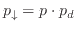 and
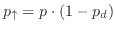,
with 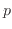 representing the average occupation probability and 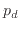 controlling the anisotropy.
The Leath-Alexandrowicz method is used to grow a cluster from an active seed site.
We call this model with two main growth directions biased directed percolation (BDP).
Standard isotropic percolation (IP) and DP are the two limiting cases of the BDP model,
corresponding to 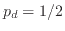 and 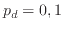 respectively.
In this work, besides IP and DP, we also consider the 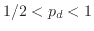 region.
Extensive Monte Carlo simulations are carried out on the square
and the simple-cubic lattices, and the numerical data are analyzed by
finite-size scaling. We locate the percolation thresholds of the BDP model for 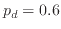 and 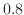,
and determine various critical exponents.
These exponents are found to be consistent with those for standard DP.
We also determine the renormalization exponent associated with the asymmetric
perturbation due to
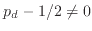 near IP, and confirm that such an asymmetric scaling field is relevant at IP.